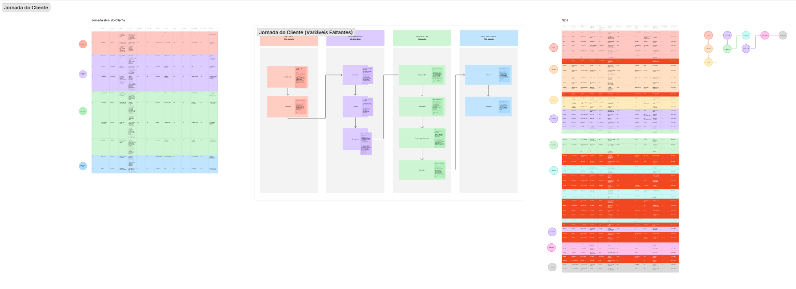
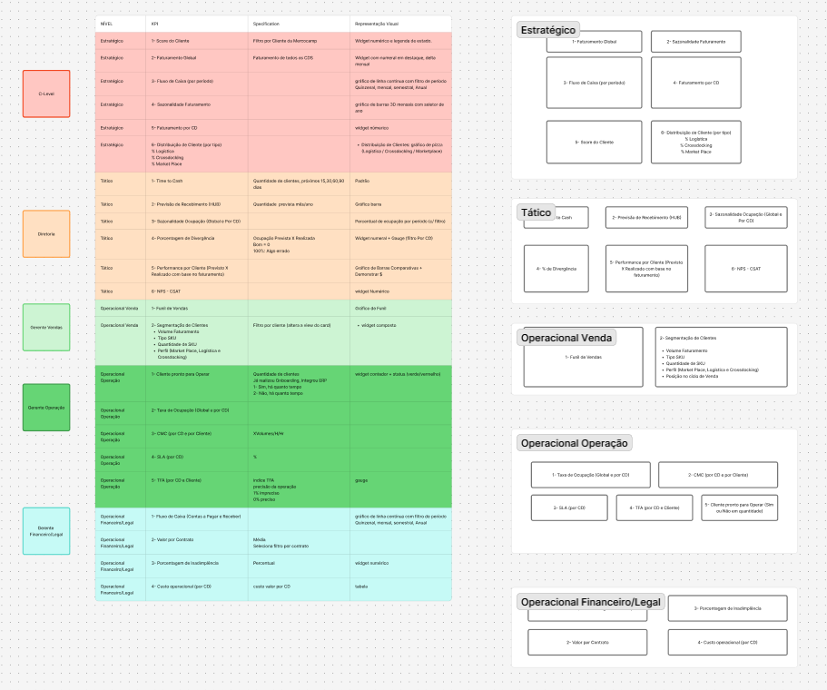

Uma torre tem andares. A informação também.
Arquitetura da informação · modelo SCORO caso
Processo &
descobertas
Em parceria com a Chronus Performance AI, desenvolvi um produto de monitoramento operacional para C-Level, Diretoria e Gerência — informação complexa apresentada com clareza, com IA embarcada para anomalias, previsões e recomendações.
Problema — Dado capturado sem fluxo de consumo definido: previsão fraca, retrabalho, decisão "no feeling".
Solução — Substituir o feeling por uma cultura de dado confiável e atualizado.
- Mapeamento de KPIs end-to-end Jornada comercial completa, pontos críticos e oportunidades de medição.
- Modelo SCOR Estrutura padrão da indústria, descoberta com especialista em excelência operacional e validada com diretor logístico.
- Entrevistas in loco CEO e diretores de Operação, TI e Comercial — dores reais por nível.
- KPIs por nível O que mostrar em cada camada: estratégico, tático, operacional.
A jornada e as lacunas
Mapeei a jornada comercial de ponta a ponta. As lacunas se concentravam na operação — o trecho que mais gera evento.
- Lead e proposta
- Perfil de cliente
- Dado comercial disponível
- Contrato e cadastro
- Setup operacional
- Dado contratual incompleto
- Movimentação e ocupação
- Sem fluxo de consumo do dado
- Previsibilidade comprometida
- Faturamento e recebimento
- Satisfação e renovação
- Leitura retroativa
Quem decide com o quê
Cada indicador amarrado ao nível de decisão e à pessoa que o usa — a matriz que virou a arquitetura da informação.
"Reduzir decisões no feeling e acelerar respostas a desvios."
Resultados
O produto entrou numa operação de peso — três centros de distribuição, mais de 40 mil m² de armazenagem, cerca de 350 empresas atendidas. Ao organizar 23 indicadores por nível de decisão, o monitoramento virou acionável: o C-level passou a ler a saúde do negócio, a diretoria ganhou controle da execução, e a operação trocou a decisão "no feeling" por dado confiável. O MVP virou produto e hoje está em produção no cliente.
Artefatos do processo
Os boards originais de mapeamento, do jeito que foram construídos durante o projeto.

